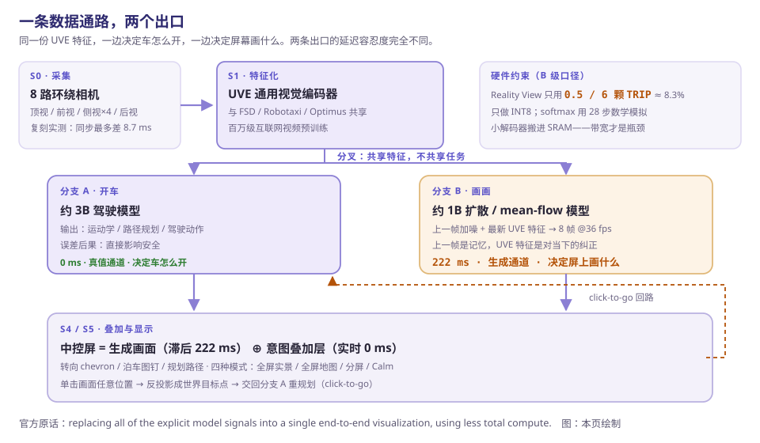
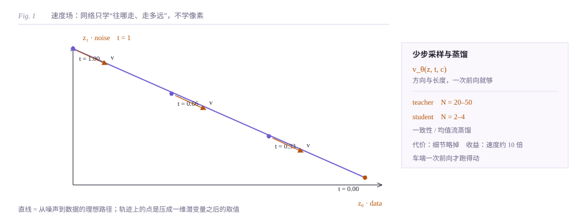
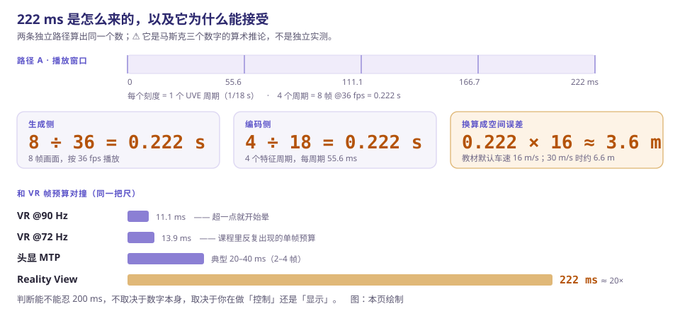
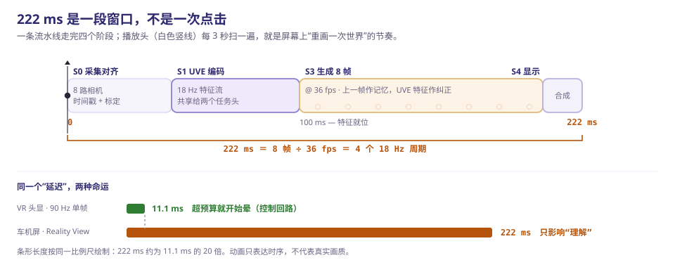
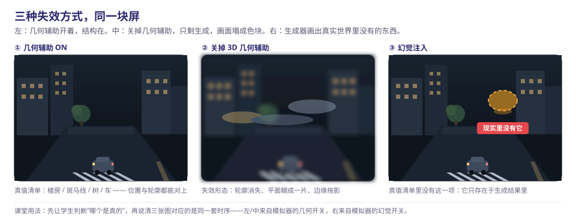

它把帧预算讲活了
VR 头显 90 Hz 的单帧预算只有 11.1 ms；这块车机屏敢用 222 ms。同一个“延迟”，为什么一个会晕、一个能忍？因为一个是控制回路，一个是显示回路。
特斯拉 FSD v15 的 Reality View：一台车上不存在的相机，每 36 分之一秒出一帧，整幅画面却滞后 222 ms。它把这学期散落的线索——3DGS、实时渲染、帧预算、生成式幻觉、降级兜底——第一次拧在了同一个产品里。
第一段来自特斯拉官方 36 秒样片；第二段是车主白天实拍的中控屏；第三段是博主 vogeldev 用行车记录仪做的 3DGS 复刻。


动图由本地 720P 素材截取 3.2 秒制作，仅用于课堂评论与教学演示；版权归原作者，完整原片见第九节。页面不依赖 YouTube / X，可直接离线打开。
VR 头显 90 Hz 的单帧预算只有 11.1 ms；这块车机屏敢用 222 ms。同一个“延迟”，为什么一个会晕、一个能忍？因为一个是控制回路，一个是显示回路。
第 2 次课你们第一次听到 NeRF / 3DGS；第 5 次课做过“全景 → 3DGS”的进阶线。现在，这类“从任意视角重建空间”的能力跑在一颗只做整数运算的车规芯片上，每 222 ms 一个窗口。
生成式画面越真实，人越容易把“画出来的”当成“检测到的”。这是一块屏上的幻觉治理，也是你们做 LLM NPC 时同一条边界。
这个案例最大的教学价值，不是“它有多酷”，而是“公开信息到底能支撑到哪一步”。
先把官方原话摆出来。特斯拉在 2026.38.6.11 的更新说明里，对 Reality View 只写了四行：
翻成课堂话：它不是回放摄像头，而是从一台“车上根本不存在的相机”持续生成画面；这台相机的位置由你选，画面用来让你看懂 FSD 接下来想做什么。官方没有说模型结构，没有说参数规模，也没有说“3DGS”或“扩散”。这三件事，都是后来别人补的。
| 项 | 事实 | 课堂提示 |
|---|---|---|
| 版本 / 固件 | FSD (Supervised) v15.0.1 · 2026.38.6.11 | “v15”是功能版本，不是模型版本号 |
| 推送 | 2026-11-21 起先推美国 Early Access 用户；首日 7 台车；12 月 Holiday Update 扩大 | 首日 7 台 ≈ 车队 0.1%，别把“发布”当“普及” |
| 硬件 | 仅 HW4 / AI4；HW3 停在 v14.3 Lite；未在欧洲上线 | 同一套软件，硬件代际直接决定“有没有” |
| 显示模式 | 全屏实景 / 全屏地图 / 分屏 / quiet（Calm） | 四种模式就是一条降级阶梯 |
| 交互 | 导航转向直接画进实景；点击画面可设定目标 | “看”与“控”是同一块屏 |
| 等级 | 来源 | 能用来做什么 | 不能用来做什么 |
|---|---|---|---|
| A · 官方一手 | Tesla 更新说明原文（2026-11-21） | 功能清单、原话、HW4 限制、发布日期 | 不能据此推断实现细节 |
| B · 当事人原话 | 马斯克 / Ashok Elluswamy / Phil Duan 等 X 长帖（11-21～23） | 3B + 1B 分叉、8 帧 @36 fps、半颗 TRIP、222 ms | 属转述，未经独立核实；数字之间会冲突 |
| C · 第三方推断 | vogeldev 复刻、Not a Tesla App、电子工程专辑、astig 等 | 提出可证伪的假设、解释现象 | 不能写成“特斯拉就是这么做的” |
youtube.com/watch?v=z3O7SclpX8Q 记成了“特斯拉官方视频”。复核频道才发现它是 DennisCW 的个人视频《NEW FSD v15 Explained》；官方那条是 eNBqkc7V1nU（@Tesla，36 秒）。标题里有 Tesla ≠ 官方发布——引用前把发布者核到 @Tesla 这一级，这就是上面那张三级表存在的理由。这是整节课最该板书的一张图：共享编码器，分叉到“开车”和“画画”两个任务头。

| 分支 A · 开车 | 分支 B · 画画 | |
|---|---|---|
| 规模（B 级） | 约 3B 驾驶模型 | 约 1B 扩散 / mean-flow 模型 |
| 输出 | 方向盘、油门、刹车 | 屏幕上的像素 |
| 算力 | 优先级最高 | 半颗 TRIP（0.5 / 6 ≈ 8.3%） |
| 误差后果 | 直接影响安全 | 影响“人怎么理解车” |
| 延迟 | 越低越好（安全关键） | 222 ms 可接受（只预告意图） |
| 共享什么 | 同一份 UVE 视觉特征——这是“总算力反而更少”的原因 | |

旧版可视化走的是“感知分类 + 素材贴图”：端到端模型本来不需要“车道线 / 框”这些中间量，但为了让驾驶员看懂，工程师额外开了一个接口，把类别和位置交给渲染引擎，渲染引擎再去素材库取预制模型摆到屏幕上。结果就是——清单上没有的东西，屏幕上就没有；识别错了，画面就穿帮。老车主见过“工程车被渲染成一列火车”。
把架构图拆成工程流水线，每一步都问三个问题：输入是什么、约束是什么、延迟算在谁头上。
扩散模型在车端跑不动，卡的不是“会不会画”，而是“要画几步”。flow matching 把“从噪声回到画面”看成一条直线：网络只回归这条线的方向与长度（速度场 v_θ(z,t,c)），推理时从纯噪声沿场走 2—4 步就落到数据端；再叠一层一致性 / 均值流蒸馏，把 20—50 步的教师压成 2—4 步的学生——速度约 10 倍，代价是细节。222 ms 那个窗口，就是这么让出来的。

| 层级 | 屏幕上还剩什么 | 什么时候进入 |
|---|---|---|
| L0 全量 | 生成画面 + 全部叠加层 | 默认 |
| L1 Calm | 只留车速、限速、下一转向、到达时间 | 用户主动 / 免打扰 |
| L2 分屏 | 地图 + 缩小的实景 | 导航需求高 |
| L3 隐藏 | 纯全屏地图，零可视化 | 不想被画面分心 |
| L4 关闭 | 没有这个功能（HW3 现状） | 硬件不支持 |
这和你们做 LLM NPC 时的四级降级是同一条思路：接不上时，先退回事实，再退回最小信息集，而不是编一个更像样的回答。
这一节不要放 PPT 结论，直接在黑板上算。两条独立路径会算出同一个数。

路径 A（生成侧）： 8 帧 ÷ 36 fps = 0.222 s 路径 B（编码侧）： 4 个 UVE 周期 ÷ 18 Hz = 0.222 s 空间误差： 0.222 s × 16 m/s ≈ 3.6 m 优化目标： 0.222 s × 0.65 ≈ 143 ms（−35%，软件重排，不换硬件）

| 被砍的东西 | 判断 |
|---|---|
| 生成画面分辨率 / 细节 | ✅ 可砍——它只是显示层 |
| 生成帧率 36 → 18 fps | ✅ 可砍——窗口变成 444 ms，仍在“预告意图”的容忍范围 |
| 意图叠加层 | ❌ 不可砍——这是唯一零延迟、真值来源的通道 |
| “已确认检测”的 3D 物体 | ⚠️ 灰色地带——砍掉就退化成旧版，保住诊断透明度但失去生成优势 |
| 直接关掉 Reality View | ✅ 终极兜底——退回图标式可视化（HW3 的现状） |
这是本案例最能训练批判性思维的地方：两套架构都能解释同一个 222 ms。
| 口径 | 来源 | 主张 | 关键数字 |
|---|---|---|---|
| ① 扩散视频生成 | 马斯克 11-22 X 长帖（B 级） | UVE 特征 → 约 1B 扩散模型 → 逐帧去噪，生成 8 帧视频 | 8 帧 @36 fps · 18 Hz · 4 周期 · 222 ms |
| ② 生成式高斯泼溅 | 特斯拉公开讲过的路线 + 电子工程专辑（C 级） | 驾驶网络一次计算直接生成 splat 椭球，再从任意虚拟相机渲染 | 一次 splat 计算约 220 ms |
| ③ 3D 代理 + 扩散补真 | vogeldev 复刻（C 级） | 多相机对齐 → 深度 → 高斯泼溅 → 迭代比对 → 替换运动车辆 → 生成式收尾 | 纯生成几何失败；相机不同步 8.7 ms |
作业要求：三条任选一条，去找证据，结论只能写“支持 / 不支持 / 证据不足”，并列出看过的材料。禁止转述媒体结论。
第 2 次课《立体显示技术》的结尾，讲义里有一句：“NeRF、3DGS 等把真实世界转为可显示、可交互的 3D 表示，是未来生成式立体内容的基础。”第 5 次课的全景进阶线又留了一句：“全景记录的是从一个点看到的一圈；3DGS 记录的是一整个可以走进去的空间。”
Reality View 实现的，正是这两句话描述的能力——不管底层是 3DGS、扩散，还是两者混合（官方都没公布）：从运动中的 8 路摄像头，在一个 222 ms 的窗口里重建一整个空间，而且是从一台车上根本不存在的相机（车顶正上方）看出去。如果“生成式高斯泼溅”的口径成立，那就是 3DGS 真的跑上了车规芯片；即便不是，这条“从任意视角重建”的技术线也已经量产落地。
单文件、零依赖、双击即开。它不模拟特斯拉的画质，只模拟时序、预算与失效方式。
如果页面内操作不方便，全屏打开模拟器 →。真实浏览器实测（2026-11-24，本机）：无 JS 错误；画面滞后在 221–252 ms 之间浮动——222 是窗口长度，“滞后”读数含“这一帧已经等了几毫秒”，所以只会往上漂不会往下掉；空间误差随之在 3.5–4.0 m；算力占用显示 2–3%，那是这台电脑的实测换算，与车规芯片无关——所以模拟器只用来讲时序与失效方式，不讲算力绝对值。
| 动作 | 预期现象 | 对应教学点 |
|---|---|---|
| 拖动相机高度 / 后距 / 俯仰 | 同一段路换一个取景，甚至从车顶正上方看 | “arbitrary virtual camera”是真的自由取景 |
| 关掉 3D 几何辅助 | 画面塌成色块与拖影 | 纯生成做不出几何正确的场景 |
| 把 K 拉到 8 | 算力条逼近甚至冲破半颗 TRIP 预算 | 算力约束如何逼你降级 |
| 勾选幻觉注入 | 屏幕上出现一个现实里没有的橙色物体 | 生成式界面的“流畅错误” |
| 单击主画面 | 规划轨迹转向点击处 | 像素 → 反投影 → 世界目标点 → 重规划 |

这一节可以直接当“信息素养”练习：同一条新闻，三种写法，哪一种能进论文？
| 流传说法 | 问题 | 正确写法 |
|---|---|---|
| “参数从 10 亿涨到 100 亿” | 特斯拉从未官方公布参数规模；马斯克 11-22 的口径是 3B 驾驶 + 1B 渲染，“v14≈1B / v15≈10B”是二手转述。 | “据 2026-11-22 马斯克技术说明：约 3B 驾驶 + 约 1B 渲染”；或“第三方转述称约 10B，未经官方确认”。两套口径都摆出来。 |
| “220 ms 是实测” | 它是 8÷36、4÷18 两条路径的算术推论；媒体明确写过“这是马斯克数字里的算术，不是独立测量”。 | “按官方口径推算约 220 ms”；若写“实测”，必须给出测量方法与设备。 |
| “3D 重建 + 扩散补全是官方架构” | 官方只说了 generative + arbitrary virtual camera；“拼接 → 3D → 补全”是媒体描述与 vogeldev 复刻的第三方推断。 | 把两套口径作为假设讲，明确写“特斯拉没有说明用的是哪一种”。 |
如果只剩五分钟，选第 1 题和第 4 题；它们最能接回你们自己的作品。
旧版可视化是检测清单：模型检出什么，屏幕就画什么图标。新版是模型的主观重绘：斑马线、倒影可能只是画出来的，不是确认检测到的。你看到的不等于车看到的。对监督式系统来说，这是从“证据”退到“演出”。这是进步还是风险？
v15 删除 disengagement 菜单——接管时不再弹窗提示。一面是体验优化，一面是把监督成本从系统身上转移到人身上。与“Supervised（监督式）”的责任承诺方向相反。好设计还是危险信号？
生成器的失效方式就是“流畅地出错”。车主报告过“开着开着某些东西突然变形，或出现不该出现的东西”。这对安全关键场景和工业 / 医疗 VR 是不可接受的——那些场景必须能追溯到具体信号。你的作品里，哪个模块允许“流畅地错”，哪个不允许？
特斯拉自测口径，无测试集、无里程、无定义、无第三方复核；FSD 历史上版本并非单调改善。教学上要教会学生区分“方向”与“距离”。如果让你为这句话补一个实验设计，最少需要哪三个量？
YouTube / X 在校园网通常不可直连；课堂一律用本地文件，页面只保留出处链接。
| 站点（2026-11-24 本机实测） | 直连 | 经 127.0.0.1:7890 | 对课堂意味着什么 |
|---|---|---|---|
| bilibili.com | 200 ✅ | 200 | 教室里能直接打开；4K / 1080P60 是大会员专享，未登录只给 720P——对课堂够用 |
| youtube.com · i.ytimg.com | 000 ❌ | 200 ✅ | 四条原片是经代理下载的；校园网大概率没有这个代理 |
| x.com | 000 ❌ | 200 ✅ | 推文链接学生在家能开，教室里打不开——只当出处，不当素材 |
| github.com · api.github.com | 000 ❌ · 200 ✅ | — | 仓库网页打不开，但 API 能读到 README |
视频素材\ 353 MB · 18 个文件；视频素材_YT\ 394 MB · 4 个文件），链接留给学生回家看。别让 40 个学生同时挂在教室网络上点 YouTube。| 视频 | 频道 | 链接 |
|---|---|---|
| Introducing Tesla Self-Driving V15（36 s） | @Tesla（官方） | youtube.com/watch?v=eNBqkc7V1nU |
| Tesla FSD V15: I Rebuilt Reality View From My Own Car（10:16） | @vogeldev | youtube.com/watch?v=u8SUx7tKaRM |
| First drive on Tesla FSD V15（25:15） | @realsawyermerritt | youtube.com/watch?v=TSpBfh7Ubw8 |
| First Tesla FSD V15 daytime drive（9:22） | @realsawyermerritt | youtube.com/watch?v=swuHnUDS6hM |
| 标题 | 时长 | 用途 |
|---|---|---|
| 技术解析！特斯拉 FSD V15 离谱可视化到底怎么做的？ | 5:25 | ⭐ 备课基准：3B/1B、8 帧 @36 fps、半颗 TRIP |
| 特斯拉 FSD V15 背后的技术就是大名鼎鼎的高斯泼溅！ | 1:31 | ⭐ 接第 2 / 5 次课 3DGS 线 |
| 科技博主 vogeldev：我用 Model 3 行车记录仪复现了 Reality View | 1:06 | ⭐ 复刻工作流 |
| FSD v15 实景视图有延迟？ | 1:39 | ⭐ 把 222 ms 讲成可感知的体验 |
| 特斯拉 FSD v15 Reality View 就这？v14 撞杆，v15 会重… | 0:37 | v14 vs v15：这次到底换了什么 |
| 特斯拉 FSD V15 最大骗局 | 6:14 | 批判视角：删除接管弹窗、25× 无基线 |
| 材料 | 链接 | 价值 |
|---|---|---|
| 官方更新说明原文 | notateslaapp.com/software-updates/version/2026.38.6.11 | 一切引用的源头 |
| Gear Musk：马斯克技术说明整理 | gearmusk.com/2026/11/22/fsd-v15-reality-view | B 级主源 |
| 汇智网：半颗 TRIP、220 毫秒 | hubwiz.com/blog/reality-view-3b-1b-diffusion-half-trip-220ms | 算术核对最细 |
| 新浪汽车：画面究竟如何实时生成 | auto.sina.cn/2026-11-23/detail-inizsuwk8386422 | 双路分叉讲得最清楚 |
| 爱范儿：把“GTA”搬进汽车 | tech.ifeng.com/c/8yGDxrIUHlS | 旧管线“素材贴图”讲得最清楚 |
| astig：高斯泼溅原理 | astig.ph/gaussian-splatting-explained-tesla-reality-view | 接第 2 / 5 次课 3DGS |
检索方式：8 组关键词 × 2 种排序 × 3 档时长，命中 110 条，人工筛出 17 条。⭐ 是课堂上真会用到的那几条，其余留给课后。
| # | 标题 | 时长 | 用途 |
|---|---|---|---|
| 01 | 技术解析！特斯拉 FSD V15 离谱可视化到底怎么做的？ | 5:25 | ⭐ 备课基准（42 号车库） |
| 02 | 特斯拉 FSD V15 背后的技术就是大名鼎鼎的高斯泼溅！ | 1:31 | ⭐ 接第 2 / 5 次课 3DGS |
| 03 | 科技博主 vogeldev：我用 Model 3 行车记录仪复现了 Reality View | 1:06 | ⭐ 复刻工作流 |
| 04 | 网友一夜复刻马斯克引以为傲的“实时渲染”，并不能解决实际问题 | 3:26 | ⭐ 复刻 + 批判，讨论题素材 |
| 05 | 特斯拉 FSD V15 看见了什么？从真实激光回波到一根拦路的树枝 | 3:06 | 感知链路（对应 S0 / S1） |
| 06 | FSD v15 实景视图有延迟？ | 1:39 | ⭐ 把 222 ms 讲成可感知的体验 |
| 07 | FSD V15 雾天“透视”画面为 AI 重建 / 存在时延 | 0:27 | 极端天气 + 时延，短，适合插入 |
| 08 | FSD v15 真正的价值，在于找到了世界模型的低维表达 | 1:39 | 理论收束（深蓝学院） |
| 09 | 【三分半看懂】现实版 GTA 来了？自带上帝视角的实景视图怎么做出来的 | 6:20 | 通俗总览，零基础适用 |
| 10 | 特斯拉 FSD V15 实时渲染是怎么做到的，Reality View 技术讨论 | 8:15 | 长篇讨论（可能是外网口播，字幕未必可用） |
| 11 | 特斯拉 FSD V15 上帝视角 Reality View 深度解析 | 13:52 | 课后材料（分 p1 / p2 两个文件） |
| 12 | 特斯拉 FSD 全解：原理、历史、争议一次讲透｜从 FSD 15 讲起 | 16:47 | ⭐ 课后自学首选（史 + 术） |
| 13 | FSD V15 暴雨场景实时渲染 | 0:18 | 极端天气画质，冲击感强 |
| 14 | 特斯拉 FSD V15 在美推送，道路实时渲染像玩游戏 | 0:23 | 快闪，做开场 |
| 15 | 特斯拉 FSD v15 眼中的曼哈顿街区，白天都能识别哪些物体 | 2:51 | 白天的“识别清单” |
| 16 | 特斯拉 FSD V15 最大骗局 | 6:14 | ⭐ 批判视角：删除接管弹窗、25× 无基线 |
| 17 | FSD v15 Reality View 就这？v14 撞杆，v15 会重… | 0:37 | v14 与 v15 直接对比 |
上面四条已用 oembed 核实标题与频道并存进 视频素材_YT\；下面六条是同批检索到、没下载的备选，需要时按 ID 补。
| ID | 内容 | 频道 | 时长 |
|---|---|---|---|
iAqFI3cnBJY | AI DRIVR 首驾体验 | @AI DRIVR | 8:09 |
ZtDJ6A67hns | TESLARATI 深入解析 | @TESLARATI | 14:03 |
0r7oIUrT35g | 停车与答疑（长） | @Dirty Tesla | 31:13 |
ndkxVhJAmqc | 首驾片段 | @Dirty Tesla | 9:18 |
UP-6LWM-UzA | 首驾片段 | @Dirty Tesla | 9:06 |
z3O7SclpX8Q | 《NEW FSD v15 Explained》非官方 | @DennisCW | 1:39 |
补下载命令（教师自己机器，必须带代理）：yt-dlp --proxy http://127.0.0.1:7890 -f "bv*[height<=720]+ba/b[height<=720]" "https://www.youtube.com/watch?v=<ID>"
这些是“3B + 1B、8 帧 @36 fps、半颗 TRIP、222 ms、−35%”这套数字真正的出处。引用时请标到具体一条，而不是“据外媒”。
| 作者 | 内容 | 链接 |
|---|---|---|
| Elon Musk | v15 技术说明长帖（UVE / 3B+1B / 8 帧 @36 fps / 半颗 TRIP / 222 ms / −35%） | status/2124458557525397780 |
| Elon Musk | 车继续用 AI4，AI5 不给车 | status/2124475458150334900 |
| Elon Musk | AI5 算力约为 AI4 的 12 倍 | status/2124459444620628193 |
| Elon Musk | 约 10 倍整体硬件性能，内存带宽仍是瓶颈 | status/2124581034419499420 |
| Ashok Elluswamy | 新可视化总算力比旧界面还少 | status/2124230700547326435 |
| TeslaNewswire | 实车样片（海岸线 / 云浪） | status/2124786359558631831 |
| Lawson Fulton | Duan 四年前在面试时提出“让屏幕像挡风玻璃” | status/2124302147965886962 |
| Yun-Ta Tsai | 团队同时在推进多个项目 | status/2124327233028505636 |
| Shahan Neda | 2023 年的照片：长期在做“把图像变成 3D 场景” | status/2124310657223086245 |
另有 13 条 pic.twitter.com/… 媒体短码（Tesla 推送总览、@TeslaSI 更新说明、“FSD is GTA irl”、Nic Cruz Patane 三条、Sawyer Merritt 三条、Drive Tesla Canada 演进图、@BLKMDL3 对比、@AsFoundX 圣诞彩灯、@01Ananto 曼哈顿 1:11:44 全程）——短码必须配账号名与日期才能定位，完整清单见教师本地 视频清单.md §3.3。
结课回顾只有 4 分钟给它；这一页的其余部分是课后阅读与专题课素材。
| 时间 | 做什么 | 素材 |
|---|---|---|
| 0:00—0:50 | 放官方 36 秒样片，只问一句：“这是摄像头画面，还是游戏引擎？”让学生举手 | 本页视频 / 本地原片 |
| 0:50—2:10 | 给三个数字：3B + 1B、半颗 TRIP、222 ms；说清“两个出口” | 架构图 |
| 2:10—2:50 | 现场算：8÷36、4÷18、0.222×16；和 VR 的 11.1 ms 对撞 | 黑板 / 时间账图 |
| 2:50—3:40 | 打开模拟器，只做两个动作：关几何辅助、勾幻觉注入 | 模拟器 |
| 3:40—4:00 | 收在“从任意视角重建”：“你们学过 3DGS；今天，这类能力跑在车规芯片上，每 222 ms 一个窗口。” | 第 2 / 5 次课伏笔 |
| 分钟 | 内容 |
|---|---|
| 0–4 | 官方 30 秒 + 车主白天 30 秒；问“是摄像头还是引擎” |
| 4–10 | 板书架构图；只讲一个结论：共享编码器 + 分叉任务头，总算力反而更少 |
| 10–15 | 只算一个数：222 ms vs VR 11.1 ms ≈ 20× |
| 15–21 | 模拟器三个动作：K 拉到 8、关几何辅助、勾幻觉注入 |
| 21–25 | 一个讨论题 + 落回 3DGS：“它现在跑在一颗只做整数运算的芯片上” |
| 段 | 时长 | 内容 |
|---|---|---|
| ① 钩子 | 8′ | 官方视频 + 车主夜城实测；投票“摄像头还是引擎” |
| ② 立靶 | 12′ | 三个数字：3B/1B、半颗 TRIP、220 ms |
| ③ 拆架构 | 18′ | 板书“一条数据通路、两个出口” |
| ④ 算时间账 | 15′ | 8/36、4/18、0.5/6；222 vs 11.1 |
| ⑤ 动手 | 20′ | 模拟器四个动作 |
| ⑥ 争议 | 12′ | 诊断透明度 / 删除接管菜单 / 25× 无基线 |
| ⑦ 收束 | 5′ | 接回“全景 → 3DGS → 车规 3DGS” |
摄像头 8 路 ──► UVE 编码器(18Hz) ──┬─► 3B 驾驶模型 ─► 车怎么开 [零延迟·真值]
└─► 1B 扩散模型 ─► 屏幕画什么 [222ms·生成]
▲ │
└── 上一帧 + 噪 ─────────┘（记忆 + 纠正）
算力: 0.5 / 6 TRIP ≈ 8.3% 数值: INT8, softmax 28 步模拟
延迟: 8帧/36fps = 4周期/18Hz = 222ms @16m/s ≈ 3.6m
对照: VR@90Hz 单帧 11.1ms → 222ms ≈ 20 倍
任选一条车主视频，只记录能测量的东西：画面内容与真实场景的差异点（盲区、边缘、被遮挡物）、失真形态（滞后 / 漂移 / 畸变 / 突变）。必须写出 3 个“我无法判断”的点。
给自己作品里的一个生成式模块（LLM NPC、导览文本、语音）设计四层降级链，写清每层牺牲什么、保留什么真值通道。最坏情况下用户仍能拿到什么？
用三个可证伪观察点中的任意一条去找证据。结论只能写“支持 / 不支持 / 证据不足”，并列出看过的材料。不允许只转述媒体结论。
下面这些都在课程目录 10_课堂案例_生成式现实视图_RealityView\ 里；本页与模拟器的站点副本在 assets/vr-2026/。
| 文件 | 内容 | 什么时候用 |
|---|---|---|
教学包_RealityView_技术拆解与课堂设计.md | 12 节、约 36 KB：事实核验与信源分级、六阶段工作流、两套口径、数值预算、课次落点、90′ / 25′ 课表、提问链、三个作业、引用规范 | 备课与答问的底稿；学生追问细节时照着讲 |
视频清单.md | 17 条 B 站 + 4 条 YouTube + 9 条 X + 13 条媒体短码 + 可达性实测 | 找素材、找出处、核对标题与时长 |
视频素材\（353 MB · 18 个文件） | B 站 720P，已合并 MP4 | 课堂播放，VLC / PotPlayer / 浏览器都能开 |
视频素材_YT\（394 MB · 4 个文件） | 官方 36 秒样片 + vogeldev 复刻 + Sawyer Merritt 两条 | 开场那 50 秒就用官方那条 |
reality_view_sim.html | 模拟器源文件（站点副本在 assets/vr-2026/rv/rv-sim.html） | 没有网络时双击即开，不必进浏览器历史 |